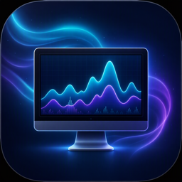

Všetko dôležité naživo
CPU aj po jednotlivých jadrách, RAM, rýchlosť disku a siete. Každý graf ukazuje minimum, priemer a maximum a interval obnovy si nastavíš od 1 do 10 sekúnd.

AetherMonitor systému pre macOS
Aether sleduje CPU, pamäť, sieť a disk v reálnom čase, pamätá si výkon za posledných 7 dní a keď dochádza RAM, povie ti aj to, ktorá aplikácia za to môže.
Zadarmo · Apple Silicon · 78 MB
Ukážka beží na simulovaných dátach.
Sedem kariet v jednom okne. Bez účtu, bez internetu, všetko ostáva v tvojom Macu.
CPU aj po jednotlivých jadrách, RAM, rýchlosť disku a siete. Každý graf ukazuje minimum, priemer a maximum a interval obnovy si nastavíš od 1 do 10 sekúnd.
Aether si ukladá priemernú a maximálnu záťaž do lokálnej databázy. Pozrieš si posledných 1 h, 24 h alebo 7 dní a report vyexportuješ do CSV alebo HTML.
Úroveň tlaku priamo zo systému macOS, swap, komprimovaná pamäť a rebríček aplikácií, ktoré berú najviac RAM. Hodí sa najmä na Macu s 8 GB.
Kompaktný panel s CPU, RAM a sieťou, ktorý presunieš kamkoľvek. S prepínačom „Vždy navrchu“ ostane viditeľný nad ostatnými oknami.
Nielen „RAM je na 90 %“. Upozornenie vymenuje aplikácie s najväčšou spotrebou a napíše, či ich spotreba rastie. Vie zachytiť aj proces, ktorý si pamäť postupne priberá.
Asi šesťsekundový test jedného jadra, všetkých jadier a priepustnosti pamäte. Výsledky sa ukladajú s poznámkou, takže porovnáš stav pred reštartom a po ňom.
Ikona v menu bare ukazuje záťaž CPU a RAM aj pri zatvorenom okne. Aether sa vie spúšťať po prihlásení a posiela natívne upozornenia macOS.
Zoznam procesov s vyhľadávaním podľa názvu alebo PID a triedením podľa CPU či RAM. Zaseknutú aplikáciu ukončíš jedným tlačidlom.
Tmavá alebo svetlá téma, prípadne podľa systému. Farbu rozhrania si vyberieš zo šiestich pripravených alebo si namiešaš vlastnú.
Vyskúšaj si to rovno na tejto stránke:
Aether nie je podpísaný vývojárskym certifikátom Apple, takže ho macOS pri prvom spustení zablokuje. Klikni na Aether.app pravým tlačidlom, zvoľ Otvoriť a potvrď. Stačí to urobiť raz.
Stiahnuteľná verzia je zostavená pre Macy s čipom Apple Silicon (M1 a novšie).
Nie. História výkonu aj výsledky benchmarkov sa ukladajú len do databázy v tvojom Macu a aplikácia sa na internet nepripája.
macOS teplotné senzory bežným aplikáciám nesprístupňuje, preto je karta Teplota na Macu bez údajov.
To je zámer – Aether ostáva v menu bare, aby mohol zbierať históriu a posielať upozornenia. Úplne ho ukončíš cez Cmd+Q alebo položkou „Ukončiť“ v menu ikony. V Nastaveniach sa to dá vypnúť.
Rozbaľ ZIP a presuň Aether.app do priečinka Aplikácie.
Stiahnuť pre macOS · 78 MB